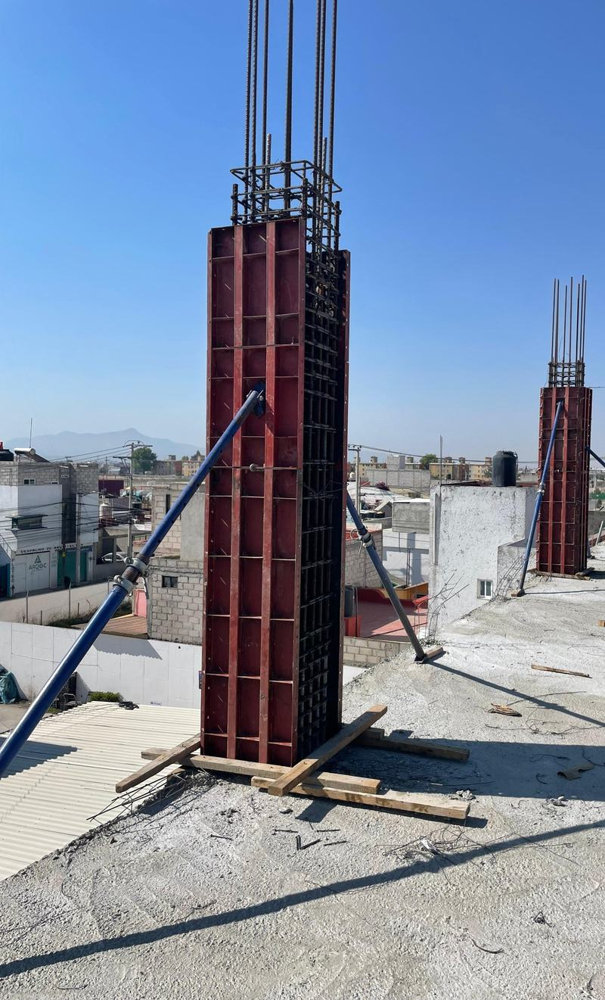

Cimbra metálica o de madera: ¿qué conviene para tu obra?
La mejor elección depende de lo que vas a construir, las veces que usarás el equipo y el acabado que buscas.

La cimbra da forma al concreto fresco y lo contiene mientras adquiere la resistencia necesaria. Tanto la metálica como la de madera pueden funcionar bien cuando el sistema se selecciona, instala y utiliza de acuerdo con el proyecto.
Si estás comparando opciones, estos son los puntos que vale la pena revisar.
1. Reutilización en varios colados
Los componentes metálicos pueden utilizarse en numerosos ciclos si se limpian, revisan y almacenan correctamente. Esto puede ser conveniente cuando la obra repite medidas o cuando el equipo se utilizará en varios proyectos.
La madera también puede reutilizarse, pero los cortes, las perforaciones y la humedad pueden reducir su vida útil. La cantidad de usos de cualquier sistema depende del material, su estado y el cuidado que reciba.
2. Medidas y acabado más uniformes
Los paneles metálicos en buen estado ayudan a mantener formas y medidas repetibles. Una superficie limpia, las juntas bien resueltas y un desmoldante compatible pueden favorecer un acabado uniforme.
El resultado también depende de la colocación y compactación del concreto. Elegir cimbra metálica por sí solo no garantiza un acabado perfecto.
3. Montaje en elementos repetitivos
Cuando las dimensiones de los paneles coinciden con las del proyecto, un sistema modular puede reducir los cortes y facilitar la repetición del armado. El beneficio depende de la planeación, los accesorios completos y la experiencia de la cuadrilla.
4. Menos recortes de madera
Reutilizar componentes metálicos puede disminuir los recortes y residuos de madera durante la obra. Para evaluar el impacto total también hay que considerar el transporte, el mantenimiento y la vida útil del equipo.
¿Cuándo puede convenir la madera?
La madera ofrece flexibilidad para resolver formas especiales, ajustes y dimensiones poco repetitivas. En trabajos pequeños o con muchos cambios de geometría, puede ser una alternativa práctica. En algunos proyectos conviene combinar sistemas, siempre que la solución esté prevista y revisada por el responsable técnico.
Antes de decidir, revisa tu proyecto
- Elemento: ¿vas a colar losa, muro, columna o trabe?
- Repetición: ¿cuántas veces se usarán las mismas medidas?
- Logística: considera acceso, traslado, manejo y almacenamiento.
- Costo total: compara renta o compra, mano de obra, accesorios y mantenimiento.
- Requisitos técnicos: revisa cargas, apoyos, uniones y secuencia de trabajo con el responsable de la obra.
¿Necesitas elegir tu cimbra?
Compártenos el elemento que vas a construir, sus medidas y la ubicación de tu obra para consultar opciones de equipo.
Consultar por WhatsApp